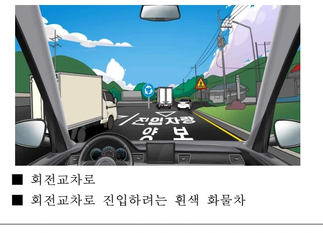

817. Which of the following are the safe ways to drive in the given situation? (Select TWO)

- ①It is important to enter the intersection first.
- ②You must drive while focusing only on what is in front of you.
- ③You must drive with caution as the truck in lane 1 may switch to lane 2 while entering the intersection.
- ④Drive while paying attention to turning vehicles from the left and vehicles entering from the right lane.
- ⑤You must keep in mind that entering vehicles have the right of way over the vehicles already in the roundabout.
Show answer
Answer
③ You must drive with caution as the truck in lane 1 may switch to lane 2 while entering the intersection.
④ Drive while paying attention to turning vehicles from the left and vehicles entering from the right lane.
Reference
When entering a roundabout, you must slow down or stop temporarily and yield to the turning vehicle. Also, in case a white truck cuts in front of you, you must slow down and maintain a safe distance from the truck.
Reference text is a machine translation for study.